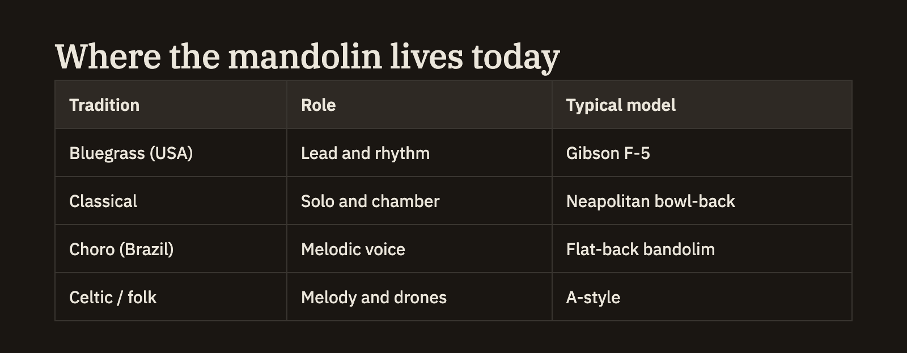

Tables
You can add a table to any note with a few keystrokes: a row of column headings, a line beneath it, and as many rows of data as you like. Tables render cleanly in your notes — and, quietly, every table also becomes data you can search and pull together across your knowledge base.
Writing a table
A table is a header row, a divider line just below it, and one or more rows of data. Separate the cells in each row with a vertical bar. The divider line is what turns those rows into a table rather than ordinary text.
| A | B ||---|---|:------::---:| a \| b |A short example:
| Trial | Condition | Effect size |
|:------|:---------:|------------:|
| 1 | control | 0.12 |
| 2 | treatment | 0.61 |
| 3 | treatment | 0.58 |
Each cell is a single box — one row tall and one column wide. Cells can't be merged or made to span across neighbours.
Tables are also data
Beyond looking tidy, every table you write becomes part of your knowledge base as structured data, with its columns and values ready to be searched and combined. That means you can ask questions across the tables scattered through your notes — pulling figures together, comparing rows, or gathering everything under a given column — from the Query view. You don't have to mark a table as special or turn anything on; any well-formed table is picked up automatically as soon as you have a header, a divider line, and at least one row of data.